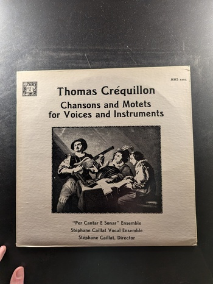
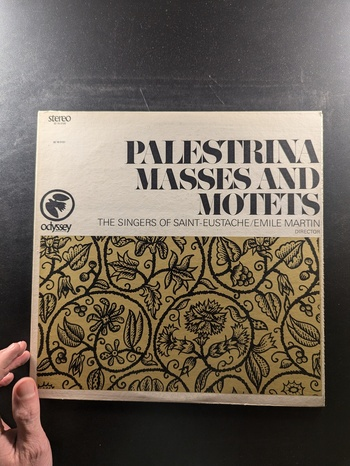

Symphony No. 1
Rachmaninoff, Eugene Ormandy, The Philadelphia Orchestra
Columbia ML 6181
La Messe de Notre Dame, Virelais, Rondeaux, Ballades, Lai
Guillaume de Machaut
L'Oiseau-Lyre
Palestrina: The Pope Marcellus Mass and Missa brevis
King's College Choir, Cambridge, David Willcocks
Seraphim
Cantata No. 71, Gott ist mein König / Cantata No. 4, Christ lag in Todesbanden
Johann Sebastian Bach
Musical Heritage Society MHS 3451
Missa Fortuna Desperata
Jacob Obrecht
Musical Heritage Society MHS 4122
Instrumental Music
The Telemann Society
Counterpoint/Esoteric 5617
Madrigals and Motets
Orlando di Lasso
Dover 97269-0
Cantata No. 80 / Cantata No. 104
Johann Sebastian Bach
Vanguard Everyman Classics
Concierto de Guitarra
Manuel Díaz Cano
Fonal LP-1079
Art of the Fugue
The Fine Arts Quartet and the New York Woodwind Quintet
Concert-Disc CS-250
Chorale Preludes for Organ
H. Kästner
MHS MHS STEREO 3988
Art of the Fugue
Bach, The Fine Arts Quartet and the New York Woodwind Quintet
Concert-Disc CS-230
Stabat Mater / Four Toccatas
Giovanni Pierluigi da Palestrina / Claudio Merulo
Musical Heritage Society MHS 3805
Prince of Music
Johannes Ockeghem
MHS MHS STEREO 4026
Chansons and Motets for Voices and Instruments
Thomas Créquillon
MHS 4205
Motets and Psalms
Heinrich Schutz
Musical Heritage Society MHS 4082
Choral Music / Madrigals & Dialogues
Morales, Victoria, Byrd, Giovanni Gabrieli
Dover HCR-ST-7271
The Tears of St. Peter
Roland de Lassus
MHS STEREO 3969/70
Missa Sine Nomine / Medieval and Renaissance Dances
Guillaume Dufay
Musical Heritage Society MHS 3496
The Motets
Ockeghem
Musical Heritage Society MHS 4179
Palestrina Masses and Motets
The Singers of Saint-Eustache/Emile Martin
Odyssey 32 16 0121
Lamentations of Jeremiah
The Harvard Glee Club
MHS 3291
Missa Pange Lingua / Miserere Mei, Deus
Josquin des Prés
The Musical Heritage Society Inc. MHS 1000
Musica Antiqua Slovaca
The Prague Madrigal Singers
Musical Heritage Society MHS 4111
The Passion According to St. Luke
Pro Cantione Antiqua
Musical Heritage Society MHS 4696M
{kind=link}
{kind=link}
{kind=link}
{kind=link}
{kind=link}
{kind=link}
{kind=link}
{kind=link}
{kind=link}
{kind=link}
{kind=link}
{kind=link}
{kind=link}
{kind=link}
{kind=link}
{kind=link}
{kind=link}
{kind=link}
{kind=link}
{kind=link}
{kind=link}
{kind=link}
{kind=link}
{kind=link}
{kind=link}